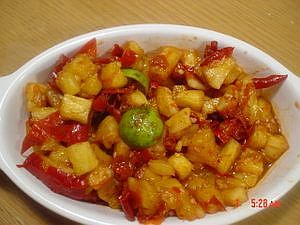

Sambal Nanas

Bahan-bahan:
- 1/2 buah nanas, potong kotak2 atau sesuai selera
- 1-2 jeruk limo
Bahan sambal:
- 20 Cabe merah mentah, buang bijinya
- 3/4 sdm Terasi bakar
- 1 sdm gula merah
- Garam sdkt saja
- 1/2 sdt vetsin
Caranya:
- Taruh potongan nanas dalam mangkuk besar
- haluskan bahan untuk sambal, terakhir perciki jeruk limo
- Campur Nanas dan sambal terasi